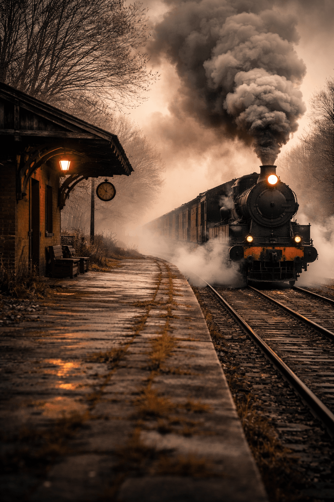

tik-tik, tik-tik; tik-tik, tik-tik…
dis mý trein se wiele wat so ritmies klik
tik-tik, tik-tik; tik-tik, tik-tik…
die kompartement was eens vol maar nou is hy leeg
my mede-passasiers het een-vir-een aan beweeg
sommige het gegroet, ander is stil-stil uit;
tik-tik, tik-tik; tik-tik, tik-tik…
ek kan maar indommel as die reelmaat my kop laat knik
tik-tik, tik-tik; tik-tik, tik-tik…
my bagasie staan reg, my kaartjie is geknip
die Kondukteur het my roete lank vooraf reeds uitgestip
Hy sal sorg dat ek betyds ontwaak
om my laaste goedjies bymekaar te kan maak
tik-tik, tik-tik; tik-tik, tik-tik…
my lyf is seer en my gemoed onverkwik
tik-tik, tik-tik; tik-tik, tik-tik…
dit reis was lank en ek voel moeg en leeg getap
ek dink ek is reg om nou af te stap,
maar nou moet ek eers wag — wie is dan in beheer?
iewers in die nag is my trok op ’n sy-lyn rangeer
alternatiewe einde (vir Hermie):
nie langer sal ek die oomblik met vrees beheen
ek vind nou my rus in die Een